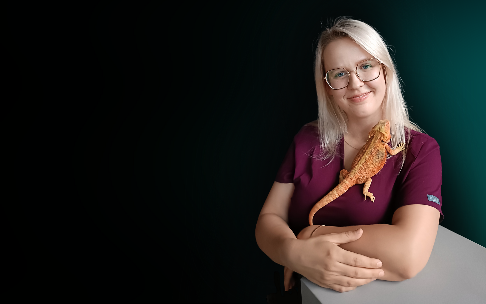

Obecnie przyjmujemy pacjentów w gabinecie weterynaryjnym Kameleon w Poznaniu – łatwy dojazd z całego regionu poznańskiego i Wielkopolski.
- Rejestracja wizyt: telefon lub SMS – 451 018 760
- Możliwy także kontakt przez Facebooka oraz Instagram.
Historia gabinetu dla gadów w Poznaniu
Jeśli kiedyś szukaliście w internecie frazy „wetarynarz gady Poznań” – trafialiście właśnie do nas. W latach 2021-2025 pracowałyśmy w gabinecie Gekon w Poznaniu (gabinet zakończył swoją działalność w czerwcu 2025r.). Przez cztery lata tworzyłyśmy w Poznaniu wyjątkowe miejsce, w którym gady i płazy mogły liczyć na fachową pomoc opartą na specjalistycznej wiedzy i doświadczeniu. Leczyłyśmy żółwie, węże, jaszczurki, płazy a także rzadziej spotykane gatunki gadów, zapewniając im diagnostykę, leczenie i opiekę dostosowaną do potrzeb egzotycznych zwierząt.
W tym czasie z naszej pomocy korzystali opiekunowie z całego województwa wielkopolskiego – nie tylko z samego Poznania, ale też z okolicznych gmin, mniejszych miejscowości i odleglejszych regionów. Opiekunowie dojeżdżali do nas z takich miejsc jak Gniezno, Leszno, Piła czy Konin. Dzięki temu gabinet, z którego nas znacie stał się rozpoznawalnym punktem na mapie Wielkopolski dla wszystkich, którzy potrzebowali weterynarza specjalizującego się w leczeniu gadów i płazów.
Nasze plany
Wróciłyśmy już do Poznania i przyjmujemy w gabinecie weterynaryjnym Kameleon. Aktualne informacje o terminach
przyjęć zawsze znajdziecie na naszym Facebooku
oraz Instagramie.

Anna Piwońska
Lekarz weterynarii
Kornelia Pohl
Technik weterynarii
Adres:
Gabinet weterynaryjny Kameleonul. Mylna 23/lok.9
Poznań